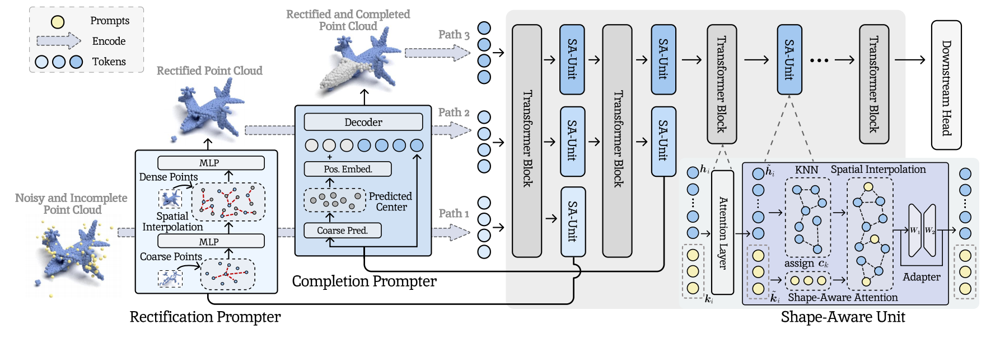

"UPP: Unified Point-Level Prompting for Enhanced Point Cloud Analysis", ICCV 2025
作者: 艾子翔(博士生), 崔振宇, 彭宇新, 周嘉欢
通讯作者: 周嘉欢
点云分析旨在使模型能够对输入的点云数据进行分类、分割、识别等一系列分析处理。然而, 在真实场景中采集得到的点云数据不可避免地存在噪声和残缺问题, 将严重降低下游点云分析处理任务的性能。现有方法主要通过多阶段处理的方式对点云数据依次进行去噪、补全和分析操作。 然而: (1)点云去噪/补全的过程与下游分析处理任务脱节, 导致对下游任务重要的几何特征被破坏； (2)多阶段的点云处理方法带来了较高的计算代价与模型参数, 影响了点云分析处理效率。
针对上述挑战, 本文提出一种用于增强点云分析处理的统一点级提示方法, 通过参数高效的点云提示学习方法将点云去噪、补全和分析能力整合到统一模型中, 实现了端到端的点云分析处理。具体贡献如下: (1)点级修正提示器: 提出点级修正提示网络, 预测并调整每个三维点云的噪声水平, 从而滤除噪声为点云补全奠定基础； (2)点级补全提示器: 提出点级补全提示网络, 通过生成辅助的虚拟点云提示来应对不完整的点云数据, 提供全面的几何信息。(3)形状感知单元: 提出形状感知模块, 对点级修正提示器和点级补全提示器输出的高质量点云进行集成增强, 并将增强后的几何信息传递到下游任务, 提升点云分析处理能力。 实验结果表明, 本方法在常用点云分析数据集ModelNet40和ShapeNet55上取得了性能提升。
该论文的第一作者是北京大学王选计算机研究所2025级博士生艾子翔, 通讯作者是周嘉欢助理教授, 与彭宇新教授合作完成。